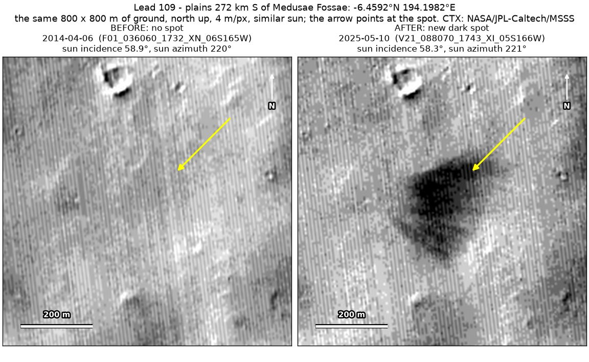
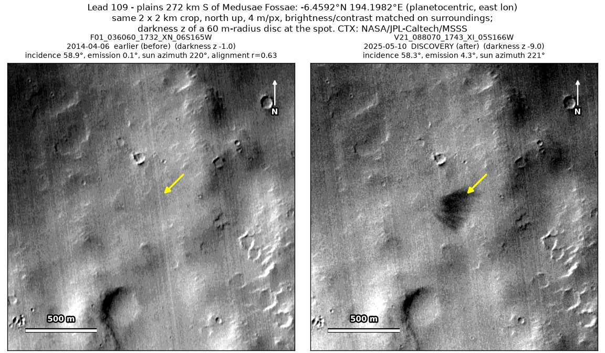
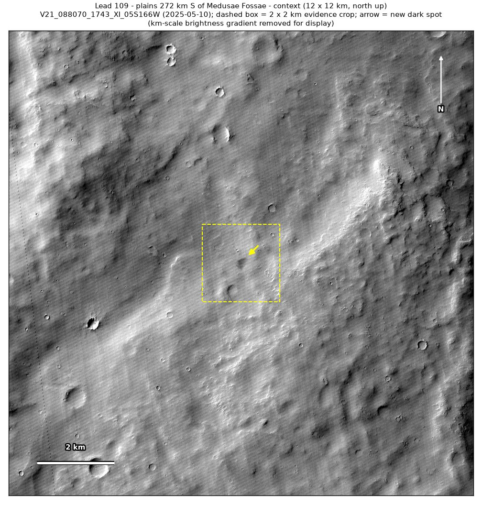
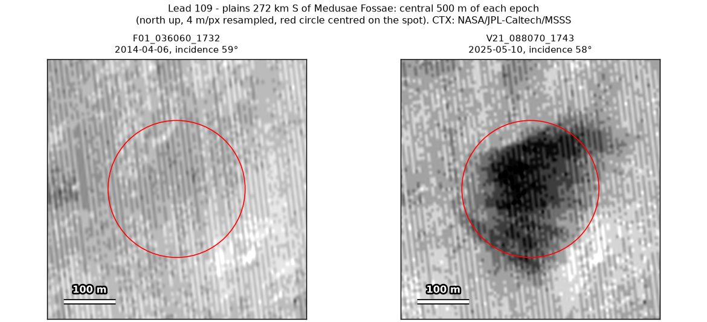

Professor of Mathematics
Paata Ivanisvili
Department of Mathematics, University of California, Irvine

← Possible new impact sites on Mars
Candidate 109: Plains 272 km south of Medusae Fossae
Weak · roughly 40%

What changed. An irregular dark patch about 190 m across, darkest in its north-western part, appeared on rolling plains 272 km south of Medusae Fossae between April 2014 and May 2025, in one CTX image so far.
Why it may be a new impact. The only other CTX image of the site, of April 2014, taken under the same sun as the May 2025 image, shows no patch there. The aligned before-and-after difference is deepest at the patch, with no other new dark mark in the surrounding 5 × 5 km, and a new dark mark with no tracks, far too large to be an image defect, could be the blast zone of a small new impact.
- Location
- 6.459° S, 194.198° E (165.802° W)
- Absent
- 6 April 2014
- Present
- 10 May 2025
- Size
- Irregular dark patch about 190 m across (196 × 270 m), darkest in its north-western part, with no compact core
- Confidence
- Weak candidate; roughly 40% that it is a new impact.
- Caveat
- The patch is irregular, has no compact core and lies on dusty ground, so it may be a place where the wind stripped away a thin layer of bright dust; this is the main reason it is rated weak. Only one image shows it, only two CTX images cover the site, and the dark feature nearby used as a check is only faintly dark in the April 2014 image, so that check is weak. It lies outside every footprint of the high-resolution HiRISE camera; the nearest ends 20.5 km away. Like every candidate here, it is unconfirmed: see the caveat.


